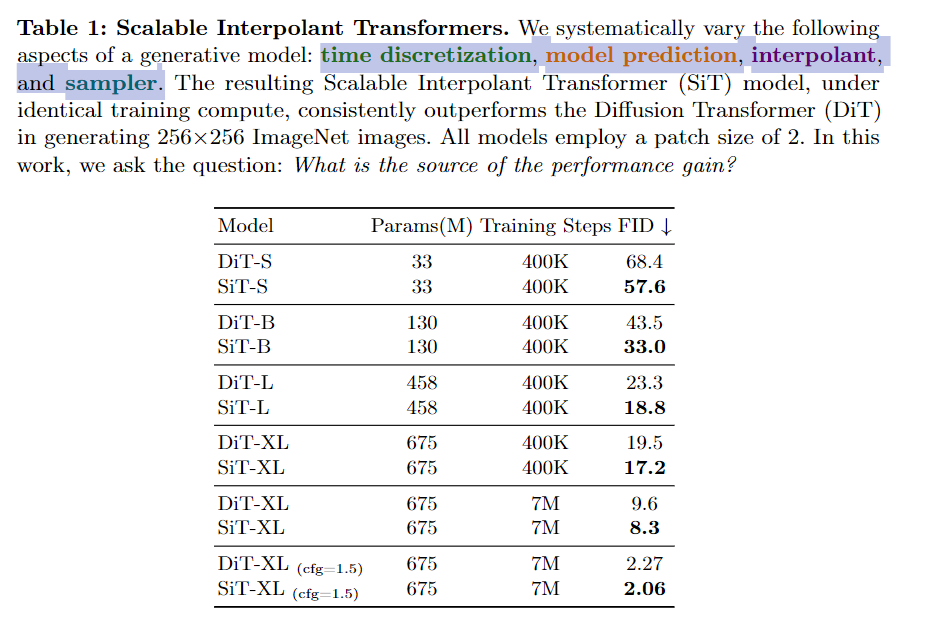

今天详细介绍的 Paper
SiT: Exploring Flow and Diffusion-based Generative Models with Scalable Interpolant Transformers
题目中的 Flow and Diffusion-based 分别指的是 Flow matching 和 Diffusion modeling 两种做生成建模的方式
这篇 paper 将图像生成模型的搜索空间

我们用两个主要的对象
Transport
该类型的参数定义
def parse_transport_args(parser):
group = parser.add_argument_group("Transport arguments")
group.add_argument("--path-type", type=str, default="Linear", choices=["Linear", "GVP", "VP"])
group.add_argument("--prediction", type=str, default="velocity", choices=["velocity", "score", "noise"])
group.add_argument("--loss-weight", type=none_or_str, default=None, choices=[None, "velocity", "likelihood"])
group.add_argument("--sample-eps", type=float)
group.add_argument("--train-eps", type=float)该类型在训练中的位置
transport = create_transport(
args.path_type,
args.prediction,
args.loss_weight,
args.train_eps,
args.sample_eps
)
logger.info(f"Training for {args.epochs} epochs...")
for epoch in range(args.epochs):
sampler.set_epoch(epoch)
logger.info(f"Beginning epoch {epoch}...")
for x, y in loader:
x = x.to(device)
y = y.to(device)
with torch.no_grad():
# Map input images to latent space + normalize latents:
x = vae.encode(x).latent_dist.sample().mul_(0.18215)
model_kwargs = dict(y=y)
loss_dict = transport.training_losses(model, x, model_kwargs) #! Here
loss = loss_dict["loss"].mean()
opt.zero_grad()
loss.backward()
opt.step()
update_ema(ema, model.module)下面给出关于 training losses 的定义
def training_losses(
self,
model,
x1,
model_kwargs=None
):
"""Loss for training the score model
Args:
- model: backbone model; could be score, noise, or velocity
- x1: datapoint
- model_kwargs: additional arguments for the model
"""
if model_kwargs == None:
model_kwargs = {}
t, x0, x1 = self.sample(x1) #! Sampling x0 & t based on shape of x1 (if needed)
t, xt, ut = self.path_sampler.plan(t, x0, x1) #! Get x_t according to path planner
model_output = model(xt, t, **model_kwargs)
B, *_, C = xt.shape
assert model_output.size() == (B, *xt.size()[1:-1], C)
terms = {}
terms['pred'] = model_output
if self.model_type == ModelType.VELOCITY:
#! Calculate loss according to prediction type
terms['loss'] = mean_flat(((model_output - ut) ** 2))
else:
_, drift_var = self.path_sampler.compute_drift(xt, t)
sigma_t, _ = self.path_sampler.compute_sigma_t(path.expand_t_like_x(t, xt))
#! Calculate loss according to weighting type (conditioned on t)
if self.loss_type in [WeightType.VELOCITY]:
weight = (drift_var / sigma_t) ** 2
elif self.loss_type in [WeightType.LIKELIHOOD]:
weight = drift_var / (sigma_t ** 2)
elif self.loss_type in [WeightType.NONE]:
weight = 1
else:
raise NotImplementedError()
#! Calculate loss according to prediction type
if self.model_type == ModelType.NOISE:
terms['loss'] = mean_flat(weight * ((model_output - x0) ** 2))
else: # ModelType.SCORE, predicting -x0/sigma_t
terms['loss'] = mean_flat(weight * ((model_output * sigma_t + x0) ** 2))
return terms
def sample(self, x1):
"""Sampling x0 & t based on shape of x1 (if needed)
Args:
x1 - data point; [batch, *dim]
"""
x0 = th.randn_like(x1)
t0, t1 = self.check_interval(self.train_eps, self.sample_eps) # Related with Path Planning
t = th.rand((x1.shape[0],)) * (t1 - t0) + t0
t = t.to(x1)
return t, x0, x1Path Planning

下面我们给出几个常用的 Path 定义方式


这几种 Path 的定义为
class ICPlan:
"""Linear Coupling Plan"""
def compute_alpha_t(self, t):
"""Compute the data coefficient along the path"""
return t, 1
def compute_sigma_t(self, t):
"""Compute the noise coefficient along the path"""
return 1 - t, -1
def compute_d_alpha_alpha_ratio_t(self, t):
"""Compute the ratio between d_alpha and alpha"""
return 1 / t
def compute_mu_t(self, t, x0, x1):
"""Compute the mean of time-dependent density p_t"""
t = expand_t_like_x(t, x1)
alpha_t, _ = self.compute_alpha_t(t)
sigma_t, _ = self.compute_sigma_t(t)
return alpha_t * x1 + sigma_t * x0
def compute_xt(self, t, x0, x1):
"""Sample xt from time-dependent density p_t; rng is required"""
xt = self.compute_mu_t(t, x0, x1)
return xt
def compute_ut(self, t, x0, x1, xt):
"""Compute the vector field corresponding to p_t"""
t = expand_t_like_x(t, x1)
_, d_alpha_t = self.compute_alpha_t(t)
_, d_sigma_t = self.compute_sigma_t(t)
return d_alpha_t * x1 + d_sigma_t * x0
def plan(self, t, x0, x1):
xt = self.compute_xt(t, x0, x1)
ut = self.compute_ut(t, x0, x1, xt)
return t, xt, ut
class VPCPlan(ICPlan):
"""class for VP path flow matching"""
def __init__(self, sigma_min=0.1, sigma_max=20.0):
self.sigma_min = sigma_min
self.sigma_max = sigma_max
self.log_mean_coeff = lambda t: -0.25 * ((1 - t) ** 2) * (self.sigma_max - self.sigma_min) - 0.5 * (1 - t) * self.sigma_min
self.d_log_mean_coeff = lambda t: 0.5 * (1 - t) * (self.sigma_max - self.sigma_min) + 0.5 * self.sigma_min
def compute_alpha_t(self, t):
"""Compute coefficient of x1"""
alpha_t = self.log_mean_coeff(t)
alpha_t = th.exp(alpha_t)
d_alpha_t = alpha_t * self.d_log_mean_coeff(t)
return alpha_t, d_alpha_t
def compute_sigma_t(self, t):
"""Compute coefficient of x0"""
p_sigma_t = 2 * self.log_mean_coeff(t)
sigma_t = th.sqrt(1 - th.exp(p_sigma_t))
d_sigma_t = th.exp(p_sigma_t) * (2 * self.d_log_mean_coeff(t)) / (-2 * sigma_t)
return sigma_t, d_sigma_t
def compute_d_alpha_alpha_ratio_t(self, t):
"""Special purposed function for computing numerical stabled d_alpha_t / alpha_t"""
return self.d_log_mean_coeff(t)
class GVPCPlan(ICPlan):
def __init__(self, sigma=0.0):
super().__init__(sigma)
def compute_alpha_t(self, t):
"""Compute coefficient of x1"""
alpha_t = th.sin(t * np.pi / 2)
d_alpha_t = np.pi / 2 * th.cos(t * np.pi / 2)
return alpha_t, d_alpha_t
def compute_sigma_t(self, t):
"""Compute coefficient of x0"""
sigma_t = th.cos(t * np.pi / 2)
d_sigma_t = -np.pi / 2 * th.sin(t * np.pi / 2)
return sigma_t, d_sigma_t
def compute_d_alpha_alpha_ratio_t(self, t):
"""Special purposed function for computing numerical stabled d_alpha_t / alpha_t"""
return np.pi / (2 * th.tan(t * np.pi / 2))我们可以将几种不同的 Path 对应的 coefficient 画出来


Prediction Type
if self.model_type == ModelType.VELOCITY:
#! Calculate loss according to prediction type
terms['loss'] = mean_flat(((model_output - ut) ** 2))
else:
#! Calculate loss according to prediction type
if self.model_type == ModelType.NOISE:
terms['loss'] = mean_flat(weight * ((model_output - x0) ** 2))
else: # ModelType.SCORE, predicting -x0/sigma_t
terms['loss'] = mean_flat(weight * ((model_output * sigma_t + x0) ** 2))这里给了 noise, score, velocity 三种方式


Loss Reweighting
这里给了两种 Reweight loss term 的方式
#! Calculate loss according to weighting type (conditioned on t)
if self.loss_type in [WeightType.VELOCITY]:
weight = (drift_var / sigma_t) ** 2
elif self.loss_type in [WeightType.LIKELIHOOD]:
weight = drift_var / (sigma_t ** 2)
elif self.loss_type in [WeightType.NONE]:
weight = 1
else:
raise NotImplementedError()These weight factors are key in the context of score-based models when T becomes large; in contrast, with stochastic interpolants where T = 1 without any bias (i.e., alpha1 set to 0 and sigma1 set to 1), these weights are less important and might impose numerical stability issue.
[WeightType.VELOCITY] 的来源


Experiments

Table 2
Table 3

Table 4
Sampler
我们考虑 ODE 和 SDE 两种 sampler


其中

The stochastic interpolant framework decouples the formulation of xt from the forward SDE and shows that there is more flexibility in the choices of wt. This choice can be made after learning.
# 这个结果是 dt 系数里面 v 这一项
def compute_drift(self, x, t):
"""We always output sde according to score parametrization; """
t = expand_t_like_x(t, x)
alpha_ratio = self.compute_d_alpha_alpha_ratio_t(t)
sigma_t, d_sigma_t = self.compute_sigma_t(t)
drift = alpha_ratio * x
diffusion = alpha_ratio * (sigma_t ** 2) - sigma_t * d_sigma_t
return -drift, diffusion # drift_mean, drift_var of score
# 这个结果是 wt 这一项
def compute_diffusion(self, x, t, form="constant", norm=1.0):
"""Compute the diffusion term of the SDE
Args:
x: [batch_dim, ...], data point
t: [batch_dim,], time vector
form: str, form of the diffusion term
norm: float, norm of the diffusion term
"""
t = expand_t_like_x(t, x)
choices = {
"constant": norm,
"SBDM": norm * self.compute_drift(x, t)[1],
"sigma": norm * self.compute_sigma_t(t)[0],
"linear": norm * (1 - t),
"decreasing": 0.25 * (norm * th.cos(np.pi * t) + 1) ** 2,
"inccreasing-decreasing": norm * th.sin(np.pi * t) ** 2,
}
try:
diffusion = choices[form]
except KeyError:
raise NotImplementedError(f"Diffusion form {form} not implemented")
return diffusion
# 这个是计算 v 这一项
def get_drift(
self
):
"""member function for obtaining the drift of the probability flow ODE"""
def score_ode(x, t, model, **model_kwargs):
drift_mean, drift_var = self.path_sampler.compute_drift(x, t)
model_output = model(x, t, **model_kwargs)
return (-drift_mean + drift_var * model_output) # by change of variable
def noise_ode(x, t, model, **model_kwargs):
drift_mean, drift_var = self.path_sampler.compute_drift(x, t)
sigma_t, _ = self.path_sampler.compute_sigma_t(path.expand_t_like_x(t, x))
model_output = model(x, t, **model_kwargs)
score = model_output / -sigma_t
return (-drift_mean + drift_var * score)
def velocity_ode(x, t, model, **model_kwargs):
model_output = model(x, t, **model_kwargs)
return model_output
if self.model_type == ModelType.NOISE:
drift_fn = noise_ode
elif self.model_type == ModelType.SCORE:
drift_fn = score_ode
else:
drift_fn = velocity_ode
def body_fn(x, t, model, **model_kwargs):
model_output = drift_fn(x, t, model, **model_kwargs)
assert model_output.shape == x.shape, "Output shape from ODE solver must match input shape"
return model_output
return body_fn
class Sampler:
"""Sampler class for the transport model"""
def __init__(
self,
transport,
):
"""Constructor for a general sampler; supporting different sampling methods
Args:
- transport: an tranport object specify model prediction & interpolant type
"""
self.transport = transport
self.drift = self.transport.get_drift()
self.score = self.transport.get_score()
def __get_sde_diffusion_and_drift(
self,
*,
diffusion_form="SBDM",
diffusion_norm=1.0,
):
def diffusion_fn(x, t):
diffusion = self.transport.path_sampler.compute_diffusion(x, t, form=diffusion_form, norm=diffusion_norm)
return diffusion
sde_drift = \
lambda x, t, model, **kwargs: \
self.drift(x, t, model, **kwargs) + diffusion_fn(x, t) * self.score(x, t, model, **kwargs)
sde_diffusion = diffusion_fn
return sde_drift, sde_diffusionSpecifying the diffusion coefficient

实验

Table 5: SDE > ODE.

Table 6: 提出的两种 w 更好